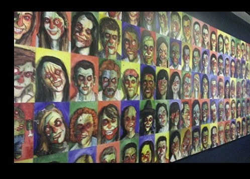

The Art of Drawing Zombies

I’m Byron from Canada and I draw Zombies.
I’ve been painting and drawing Zombies, Zombie Portraits, Zombie Cats and Zombie all the other things for nearly twenty years.
All artwork is created with ink and paint on paper, canvas or wood.
For those that want a brief history of my career, it’s long and twisty with lots of ups and downs.
I started learning how to draw in highschool, the teenage me was really determined to be a comic artist for Image Comics and have my own comicbook eventually. Then I graduated and forgot about art as I fucked around in life, eventually meeting a girl and goofed off more. One day I got married and the next thing you know I had a kid.
It was time to get serious in life so I started a job as a telemarketer which helped rekindle my passion for drawing. And for a few years that’s what I did for 8 hours a day 5 days a week. Talk on the phone trying to sell internet or credit cards to strangers in the States while drawing superheros and cartoons.
In 2009 I began blogging a bit, then around 2011 or so GooglePLUS was formed and it my career as a zombie artist really started to take off.
Google Plus really tried helping artists get onto their platform by highlighting them in many ways. I was even commissioned by Google Canada to paint over 50 of their employees as zombies.
At one point after Google PLUS closed I got busy with life and the art scene for me was an elusive dream that I still try to achieve. The last 5 years have been a grind, one foot in front of the other, stumbling all the way.

Now I’m shifting back to the physical art and the real collectors who love it, with the Horde, the community around the art, at the centre. Come for the art, stay for the Horde.
My art is also in Two Sentence Horrors, with N. M. Scuri, and I write about it on The Daily Zombie.
Find me everywhere
One link for everything is linktr.ee/artistbyron. The cards below go straight to each place. Graphics for these are coming, Byron is making them, and each card will get its picture then.